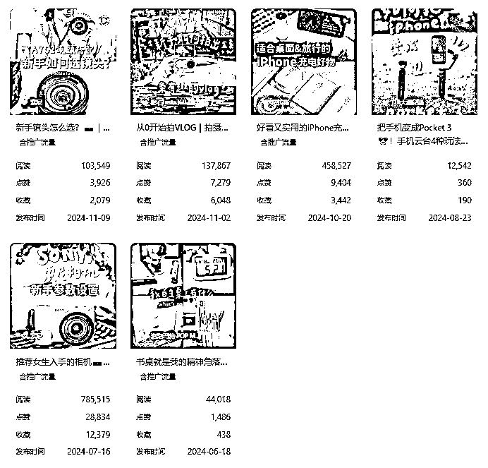

来源：https://m08zlw24sg0.feishu.cn/docx/CgBSdyEDooCZ75xOsafc0CsunYy
11月底，亦仁在我的一篇帖子下建议“做小红书广告变现的分析”，我觉得非常有意思，开干。
但做起来才发现，数据处理不太容易，我花了二十几个小时，翻了将近1800个博主的蒲公英后台，才把基础数据搞定。
不过，统计下来的5张表，可以分析出挺多东西，也能从更全局、更高的维度来看待小红书广告变现和运营，我觉得挺值的。这件事情，或许可以每年做一次。
需要说明的是，博主接广告的数量、报价，是我人工统计的，虽然为了减少误差，我在每个赛道、每个粉丝量级选择了10个接过广告的、平均阅读量最高的博主来进行统计，但毕竟是取样分析，样本量在小红书所有博主中只是极小部分，所以仍可能存在误差，请知悉。
话不多说，进正文。
截止到2024年11月20日，小红书蒲公英后台共有博主961341位，其中0.1~1w粉博主最多，占比73.8%，1~10w粉博主占比23.1%，10~50w粉博主占比2.8%，50~100w粉博主占比0.2%，100~500w粉博主占比0.1%，而500w粉以上博主只有19位，千万粉博主只有2位。
可见，能做到万粉，就超过了大多数人，而10万粉，是非常非常稀缺的。
在万粉以上的博主中，1~10w粉博主，接广告数量最多，270位1~10w粉阅读量最高、有结果广告、报价正常的博主，接广数量1263个，平均每人每月2.34个，而同样270位100~500w粉阅读量最高、有接过广告、报价正常的博主，接广数量只有622个，平均每人每月1.15个。
同时，1~10w粉博主的万粉均价，达到了1371元，而50w粉以上博主的万粉均价，降到了904元，低于小红书博主的万粉均价1000元的报价。
小红书是一个以内容为中心的平台，账号所占权重相对较低，素人、小博主也有较大概率出爆款，同时，素人和小博主的广告报价低，那么，对于预算越来越紧张、越来越讲究投入产出比的品牌方，就乐意选择10w粉以下，尾部及以下的博主进行铺量合作，他们的内容质量比千粉博主有保障，报价又不高，是提升爆款率、降低每阅读的均价的首选。
所以，万粉博主，是小红书品牌方最喜欢投的一批人。
而10~50w粉是相对最舒适的状态：报价比万粉博主高，一条广告的收入更多，同时，又比50w粉以上的腰部、头部博主有更多的接广告的机会。
所以，从运营的角度，如果以接广告为主要变现方式，建议在10w粉之前，主攻涨粉，而到了10w粉之后，可以通过调整内容，筛选更精准优质的粉丝、提高阅读和互动，能做到更高的广告报价、广告数量。
小红书蒲公英后台，一共分了27个一级赛道，分别是：
美妆、科技数码、职场、商业财经、文化艺术、音乐、汽车、游戏、素材、影视综资讯、健康养生、宠物、情感、时尚、个人护理、兴趣爱好、摄影、婚嫁、搞笑、美食、家居家装、运动健身、母婴、护肤、教育、生活记录、出行旅游。
这些赛道，是小红书上比较成熟的主流赛道。
其中，博主数最多与最少的5个赛道分别是：
从博主数量、10月11月接广告情况、万粉均价这几个主要数据的综合情况来看，以接广告为主要变现方式来做小红书，
1、个人护理，竞争不太激烈，但商单比较多。博主数量倒数第三，仅有5814位，但接商单数量，排名第5，万粉均价，也在1100元，处于居中的位置；
2、科技数码，竞争不太激烈，商单比较多。博主数量倒数第6,一万出头，接商单数量，排名第4，万粉均价统一是1100元左右，居中位置；
3、健康养生，博主数量倒数第7，一万一千多一点，接商单数量排名第3，仅次于护肤和家居家装，虽然万粉均价只有850左右，是非常低的水平，但是较多没有IP形象的工具人账号拉低了均价，而且，1~10w粉博主，健康养生最少，腰围部还有比较大的空位。
4、护肤，很意外，博主数量排名第17位，靠后，并没有想象中的竞争那么激烈，只有一万八千人不到，同时，接广数量是最多的，同时万粉均价也很高，有1400元，高于小红书平均水平。
5、搞笑，涨粉相对容易，虽然博主数量倒数第4，但是100~500w粉博主中，有93个搞笑赛道的博主，排名第4，而接广数，排名第11，不高不低。
1、游戏，很难接到商单，是10-11月接广最少的赛道，拿最好接广的1~10w粉区间博主来说，近期阅读最高的20个博主里面，有10个没有在蒲公英后台接过商单，同时，万粉均价也是最低的。另外，这个非常容易吸引18岁以下的低龄粉，变现能力不强。
2、音乐，同样难以接单商单，近期阅读最高的34个博主里面，有24个没有在蒲公英后台接过商单，万粉均价也低于小红书平均水平。
3、素材，万粉均价倒数第二，接广数量倒数第6，其中接广比较好的还是跟时尚穿搭、美妆相关的博主。这类主要靠卖壁纸、卖画、卖头像来变现，对于接广告，并不友好。
4、婚嫁，接广数量倒数第三，虽然博主数量也不多，但是需求量同样不大，这一类变现主要以带货、品牌销售为主，除了做婚嫁相关品牌、或者有相关产品的，不会做单纯的婚嫁赛道。
5、兴趣爱好，竞争非常激烈，博主数量排第四位，而接广数量倒数第4、万粉均价倒数第5，并且，其他方式的变现能力也不会很强，除非你有很强烈的某个兴趣爱好，或者有较多的时间精力，能比80%的人做得好，否则不建议挤进这个赛道。
这里对于个人护理、科技数码、健康养生、护肤、搞笑这5个赛道，1~10w粉区间和10~50w粉区间，不属于MCN机构的博主中，10~11月接广告收入更多的博主稍作分析，如果想要知道其他赛道、其他粉丝量级博主的情况或更详细的分析，可以联系子木了解更多。
账号：子子老师
类型：视频博主
接广告情况：4w粉，报价8800元，10.1~11.20接了14个广告，收入12.3w元。
简析：
1、内容主要是测评、真实经验分享，这类内容的报价、受品牌方欢迎度都比较高；
2、虽然子子的粉丝总量不多，但视频质量高，无论是内容结构、拍摄画面、博主表现力，都是打磨了比较长一段时间才能呈现出来的效果，所以，她的粉丝粘性高、数据比较稳定，种草效果反而会比主要靠爆款话题涨粉的博主更好，也让她能在报价偏高的前提下，仍然受到品牌方的青睐。
账号：ami.moment
类型：视频博主
接广告情况：9.7w粉，报价4.5w元，10.1~11.20接了3个广告，收入13.5w元。

简析：
1、ami的内容，在测评、真实经验分享的基础上，还多了vlog之类人设相关的内容，粉丝粘性、信任度高，让他在本来报价就颇高的科技数码赛道，能做到4w5的报价。
2、ami的视频，镜头质感、视频节奏，都很舒服，也是打磨较长时间才能呈现出来的效果。
3、ami的选题、色调，都非常适合小红书，做成长类、科技数码类、穿搭类，都可以学习参考。
账号：多云转晴
类型：视频博主
接广告情况：6.2w粉，报价4980元，10.1~11.20接了13个广告，收入6.47w元。
简析：
1、养生+变美，或者养生+护肤，是养生赛道中涨粉较快、较受品牌方欢迎的方向；
2、除了“养生变美”这类选题之外，多云转晴的许多选题，都是当下养生热点选题，而且她的镜头质感，更适合新人学习。
账号：疯狂的水蜜桃
类型：图文博主
接广告情况：1.4w粉，11月20日的报价是1000元，10.1~11.20接了32个广告，收入3.2w元。12月调整报价，涨了600。
简析：
1、近期很流行的live动图的形式，内容制作成本很低，但是几个接广告数量多的博主，都是这种形式，说明近期很受欢迎；
2、内容门槛不高，容易涌入很多竞争对手，可以抓紧时间先做、快速起步，以后再做转型；
3、把一个物品，放在边边上（椅子边、楼梯边）这种形式，最近几个赛道都在用，数据还不错。
账号：戴阿蒙
类型：视频博主
接广告变现情况：8.4w粉，报价1.8w元，10.1~11.20接了2个广告，收入3.6w元。
简析：
1、单纯的搞笑内容，不好变现，但跟其他赛道相结合，就会有很好的涨粉效果，阿蒙是跟情感相结合的，另外还有一个美妆博主“大只（更疯版）”，也有许多发疯式测评，搞笑+美妆，不到10w粉，报价超过1w6；所以，“搞笑”元素，可以作为某赛道的复合元素，可以获得更高的播放量、更快涨粉，也能赚到更多广告费。
账号：猫哥er
类型：视频博主
接广告情况：12w粉，报价1.4w元，10.1~11.20接了5个广告，收入7w元。
简析：
1、引入了“闺蜜”这个关系，让内容有更多的故事、情节；
2、沉浸式护肤的角度，没有bgm，而是刷子涂抹、拆开包装袋的声音，很像最近流行的“白噪音”，将护理跟白噪音结合，看起来有一种舒缓、放松的感觉，是很有意思的赛道融合。
账号：柏阳兄
类型：视频博主
接广告情况：24w粉，报价3.2w元，10.1~11.20接了9个广告，广告收入28w元。
简析：
1、科技数码类，报价高、接广多的，几乎都是测评类内容；
2、实测类（实际拿到产品，真实拍摄、测评）的粉丝更多、报价更高，适合有一定自媒体、视频拍摄剪辑、内容创作基础的博主；网测类（不实际购买，而是用网图、通过品牌方发布的参数来做对比）做号成本更低，能快速、低成本出内容，适合新人快速试错，拿到结果。
账号：铁血老太培养计划
类型：视频博主
接广告情况：23w粉，报价1.4w元，10.1~11.20接了3个广告，收入4.2w元。
简析：
不露脸的养生博主，内容制作成本低、能快速批量产出内容，而且变现效果好，适合新人，不过要注意选题，在刚开始时，像素级模仿。
这一类我之前写过分析文章，可以看看：
账号：我是霖儿
类型：视频博主
接广告情况：38w粉，报价12.88w元，10.1~11.20接了4个广告，收入51.5w元。
简析：
1、好物方向，也是报价比较高、受品牌方喜欢的方向；
2、夸张、情绪化内容，是今年小红书比较火的内容，大多数赛道都可以选择这种内容风格；
3、霖儿提供的一个有意思的方式：做的是女生变美方向的好物分享，以护肤为主，还有穿搭、饰品等，但只接主业务（护肤）相关的广告，并且明确，不接穿搭、饰品、零食的广告，会给人一种确定性，是一种让数据更稳定、提升粘性的方法。
账号：万能大饼
类型：视频博主
接广告情况：13w粉，报价7.5w元，10.1~11.20接了5个广告，收入37.5w元。
简析：
1、搞笑+生活记录+情感，好像是50w粉以内，这个赛道博主，快速涨粉、吸引品牌方的最佳公式；
2、小红书“搞笑”赛道的内容，并不单纯就是“搞笑”，还包含了无厘头、反转、奇思妙想，万能大饼的内容就是这一类，快节奏、多反转，能够提高完播率，让视频数据更好，跟生活场景相结合，既有数据、又有广告位，应该是他受品牌方青睐的秘诀。
以上是对于10.1~11.20期间，小红书蒲公英后台，博主接广告情况的整体分析，后面在数据中找到更有趣的发现，也会分享出来。
如果你有个性化的问题、想要了解的数据，可以单独找子木沟通，看我是否能够给到参考（精力有限，付费解答，感谢理解）。